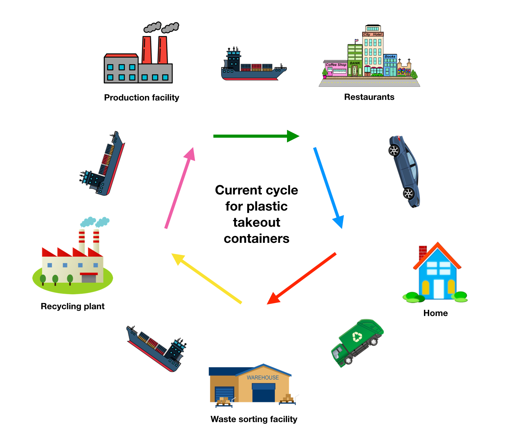
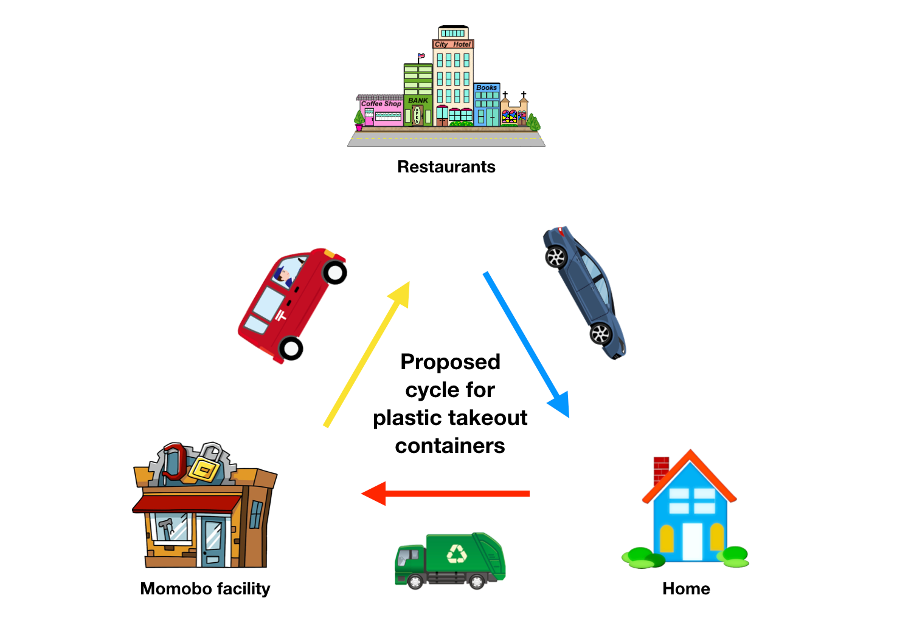
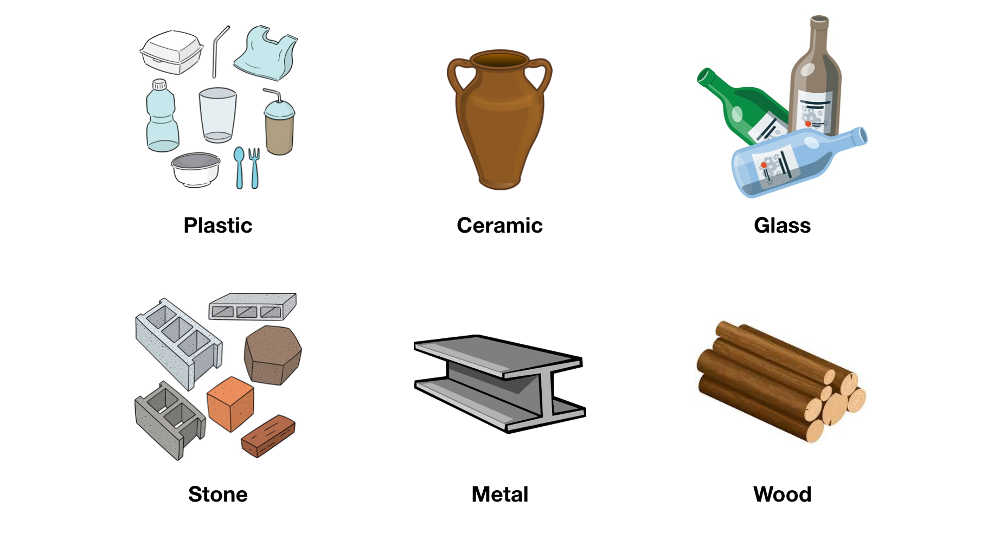

- Eliminates long shipping stages, each of which carry the cost of large carbon footprints
- Ensures a higher percentage of recycled plastic actually gets recycled, instead of ending up in a landfill or in the ocean
- Lowers costs for consumers by simplifying supply chains and removing expensive distribution networks
The traditional model for producing and distributing physical goods is centralized. A single manufacturing facility churns out products which are then transported all over the world for local use. The physical topology of this network looks like a hub with many spokes. At the end of products' lifetimes, they're handed over to recycling facilities (ideally) which break them down into raw materials to be used again. We can think of the whole process as a loop, or a life cycle. Let's consider the life cycle of plastic takeout containers:

The first thing to note about this cycle is that it’s physically big. The total distance travelled along the loop is typically tens of thousands of miles, and all those shipping stages leave a huge carbon footprint. The second thing to note is that this loop is leaky—not all plastic gets recycled, and not all recycled plastic finds its way back to the production facility. Even if homes recycle perfectly, it might be more cost effective for waste sorting facilities to throw their recycling in a landfill. And given how expensive it is to sort and recycle plastic, production facilities might decide it’s cheaper to buy new plastic instead. This leads to heavy reliance on the oil and gas industry, the source of new plastic, leading to even more carbon emissions.
What if, instead of a centralized approach, we adopted a decentralized model for manufacturing and recycling. With this model, each community would have a self-sufficient Momobo facility, under whose roof the manufacturing and recycling of plastic goods would be combined. Essentially, this model tightens the loop of the centralized model by eliminating long transportation segments. Let’s keep going with our consideration of plastic takeout containers. The new life cycle would look like:

Simpler, right? The decentralized model ditches the long shipping legs of the centralized model, eliminating outright a large portion of the carbon emmisions associated with plastic takeout containers. But its positive environmental impact goes even further. By housing recycling and manufacturing under the same roof, Momobo facilities will be able to ensure that a much higher percentage of takeout containers actually get recycled, rather than tossed in a landfill. Additionally, the logistical simplicity of this model will allow cities and consumers to better track their own carbon footprint.
The thesis that has driven widespread adoption of the centralized manufacturing model is straightforward: manufacturing equipment is expensive compared to transportation, so companies can save money by consolidating production and leveraging global shipping networks to get products into the hands of consumers. There are two ways to examine the origins and the validity of this statement:
- Through the lens of history, in which we’ll find that previous adoption of the centralized model encourages future adoption of the centralized model, thereby creating a hysteresis effect in which, at any given stage, it makes the most sense to continue with centralized production.
- Through the lens of technology, where we’ll see how the technical complexities associated with various manufacturing processes have motivated companies to centralize and consolidate their operations.
What makes the centralized model powerful?
In his book 7 Powers, Hamilton Helmer proposes a framework for evaluating the strength of a given business based on the “powers” that business might possess. A power, as he defines, is anything that enables a given company to achieve sustained differential profit margins over their competitors. The seven powers are: scale economies, network economies, counter-positioning, switching costs, branding, cornered resource, and scale economies. I bring this up because, for the sake of our historical analysis, the centralized model of manufacturing can reasonably be viewed as a business that has achieved near-100% market share over the decentralized model. One of the primary reasons it has been able to do this is because it has the power of switching costs. Helmer’s definition for switching costs is:
The value loss expected by a customer that would be incurred from switching to an alternate supplier for additional purchases.
The textbook example for this is Oracle. In the early 90s, they established themselves as the enterprise database solution. Given the level of integration their software had with other companies’ existing tech infrastructure, switching to another database software was a huge pain, so their customers simply didn’t switch and continued buying products from Oracle. Because the centralized production model isn’t exactly a product, let’s take a second to reframe Helmer’s defintion into something more useful to us. In our case, the “customer” is any person deciding to set up manufacturing operations. If, and only if, manufacturing has been set up previously—not necessarily by them, but by anyone—in a centralized way, then it is cheaper for the customer to also set their manufacturing up in a centralized way. In other words, there is a hysteresis effect where previous choices influence current ones. I think of this as the historical explanation for the dominance of centralized manufacturing.
The historical explanation
Let’s consider an example. It’s 1760 and you’re a barrel maker in Boston. Initially, your operation was simple: you and your apprentice made barrels in your workshop and sold them to local customers. The recent war effort against France, however, has quickly increased the demand for barrels (good for you!) and now the British army is requisitioning barrels for the front lines in Pennsylvania. You now have a choice—you can open up a satellite manufacturing facility in Pennsylvania, or you can ramp up production in Boston and then pay someone else to deliver the barrels to the British. Three factors make centralizing production preferable:
- Easier logistics — you already have your Boston supply chain squared away, so you won’t have to go through the hassle of finding new materials suppliers in Pennsylvania
- Economy of scale — if X square feet of factory space is required to house the necessary production equipment, it’s cheaper to rent a single larger facility in Boston than to rent a smaller facility in each location (the classic volume-area economy of scale)
- Simpler distribution — arbitrage within the transportation industry has made it cheaper and easier for you to hire them to distribute your barrels than to do it yourself
Here’s the conclusion of this argument: once the infrastructure for centralized manufacturing had been built, it made a lot of sense from an economic perspective to continue using it. The switching cost comes from the fact that centralized production and long-distance transportation networks support and encourage each other in a positive feedback cycle. Once you’re in it, it’s hard to break out of it.
I italicized “economic perspective,” however, because that’s not the only lens through which to view business decisions. In the olden days, meaning any time before 2010, the economic perspective was pretty much the only one that companies considered. But now, in 2021, businesses and individuals are starting to seriously consider the environment when making decisions. Given this change in attitude, now is the first time in history when the environmental benefits of decentralized manufacturing are beginning to outweigh the economic positives of the centralized model. In other words, the hysteresis effect is starting to break down, and the time for Momobo is now.
The technological explanation
In addition to the positive feedback cycle of history, the centralized manufacturing model has been bolstered by various technological constraints. Before I dive in, it will be helpful to remind ourselves of the thesis behind centralization:
Manufacturing equipment is expensive compared to transportation, so companies can save money by consolidating production and leveraging global shipping networks to get products into the hands of consumers.
Let’s break this down, starting with “manufacturing equipment is expensive.” What equipment specifically? And why is it so expensive? For plastic products, the primary production techniques are injection molding, blow molding, and extrusion, all of which involve melting plastic pellets and forming them into a more useful geometry. There are three main reasons why the equipment to execute these processes is expensive: 1) the equipment is physically large, 2) it requires large buildings to house it, and 3) it requires workers to run it.
Upon first glance, it might seem that these three qualities of manufacturing equipment provide a compelling argument for centralized manufacturing. If equipment is really that expensive, you want to be buying as little of it as possible to satisfy demand, right? Well, that’s a big if. The key idea here is that the scale of your equipment must match the demand you face. The big, though, misconception is about which one of these is the independant variable. The centralized model of production doesn’t come from choosing big expensive equipment, it comes from choosing global demand which in turn requires you to buy big expensive equipment. If, and only if, you decide that your factory will be producing products for the entire world, then you need expensive equipment to satisfy that demand. If instead you choose to produce products only for a single city, the cost of your equipment will be significantly cheaper.
Here’s where the “right time” half of “right place, right time” comes in: up until a few years ago, small-scale plastic production equipment hadn’t really been invented. A priori, there’s no real technological reason for this. It’s not like we didn’t have the necessary materials or processes to create small-scale plastic-production machines. The best explanation I can think of is simply that there was no demand for it. Centralization had won decisively, and no one was even thinking about injection molding or extrusion on the small scale. Then the maker movement came around and 3D printing started picking up steam, which led to increased interest in other forms of desktop manufacturing. Even today, there are very few desktop injection molders out there (the only two that I know of are this and this), and no desktop blow molding or extrusion machines. These machines aren’t particularly complicated or difficult to make, they just haven’t been invented yet because the decentralized manufacturing market is only just beginning to emerge. So, from a technological standpoint, the time for Momobo is now.
One final consideration: natural resources
In one sense, the entire concept of a global economy stems from the fact that natural resources are found only in certain places. This fact has influenced industrial decisions for millennia: cotton could only grow in the south, so northern textile mills necessarily had to rely on shipping networks for their supply; oil comes only from natural deposits, but is needed everywhere, so it necessitates shipping as well; metal has to be extracted from the mines and then shipped to the forgeries. Et cetera. Once the shipping industry emerged to transport natural resources, it became cheaper for everyone to specialize, which is the term I’ll use to describe an individual or company doing one thing, in one place, really well. In other words, the opposite of vertical integration.
Labor specialization has been responsible for periods of massive economic growth throughout history, so it is not without merits. But it is the very concept of specialization—which involves geographically dispersing operations dependant on proximity to natural resources and labor skill level—that has propped up the global shipping industry. Given the carbon footprint of this industry, it seems prudent to rely on it as little as possible, which is the whole idea behind Momobo. That said, since I’ve already acknowledged their special status of being found only in certain places, I’m willing to make a concession for the transportation of natural resources.
One simple method of reducing plastic waste is to discourage the use of plastic products. Many cities have done this with plastic bag bans and plastic straw bans, causing alternative products to emerge in their place. In certain areas, you’ll be shunned for entering a Whole Foods without a reusable bag, and many restaurants and coffee shops now exclusively carry paper straws. Quick comment: paper straws have an awful user experience. Paper straws, unsurprisingly, deform when they get wet…think about that for a second. In fact, I think a lot of paper substitutes are far worse than their plastic counterpart. I feel this way primarily because they don’t work as well but also because they’re not actually that much better for the environment when you consider the carbon footprint of their distribution networks. There are several arguments I could make for why we should continue making things out of plastic, but there are only two that really matter: 1) plastic is superior to alternative materials in many ways, and 2) plastic isn’t much worse for the environment than alternative materials.
Plastic is simply the best
From an engineering perspective, plastic is a fantastic building material. For many objects, particularly those with complex forms—bowls, water bottles, utensils, containers, etc.—plastic is far easier and cheaper to work with than metal, wood, or ceramic. It’s material properties, namely it’s strength and ductility, make it ideal for cheap products that endure high amounts of wear and tear. Most importantly, in my opinion, plastic is pretty much the only material that lends itself to mass manufacturing. Pictured below are the six materials out of which almost everything is made:

Why is plastic unique in its ability to be mass produced? It really comes down to its thermal properties. Injection molding, blow molding, and extrusion are basically the only processes that have the potential for a scale economy, in which per unit price goes down as production quanities go up. [1, 2] All of these processes have three requirements: 1) the material to be molded is liquid at some temperature, 2) the material of the mold is solid at that same temperature, and 3) it’s easy to remove the molded piece from the mold afterwards. It may not seem like it, but these requirements rule out a lot of potential material combinations.
Most plastics melt between 400 ºF and 600 ºF while most metals don’t even deform at those temperatures, which makes it particularly convenient to use metal molds to hold and form molten plastic. The only material that can withstand the temperatures at which metal melts is sand, which is the material used to make molds for engine blocks. Sand molds are complicated to make and fall apart after a single use, however, whereas steel molds for plastic injection molding machines can last for millions of units. Wood…well, wood doesn’t ever turn into a liquid, it just burns. Stone is moldable at large scales (think concrete building construction) but that process is neither quick nor cheap, and the material properties of concrete make it unappealing for human-scale, household items. Technically, ceramic and glass can be molded, but extracting them from the mold aftwards is quite difficult and expensive, so neither material lends itself to a scale economy.
The mass manufacturability of plastic means that, viewed through the lens of the consumer, certain plastic products are superior to their metal or wood counterparts because they are far cheaper. Plastic is certainly not the best material for all products, but it is for items that have short lifespans such as takeout containers, straws, and to-go utensils. No one wants a future in which takeout containers cost $5 each. Many cities even retracted their plastic straw bans after people complained about the inferiority of paper straws. Bottom line: plastic is great. Ideally, we wouldn’t have to feel bad about using it, but unfortunately climate change is a very real threat, so we have to seriously consider the environmental ramifications of our plastic usage.
Is plastic really that bad for the environment?
Yes, but not for the reasons one might think. Plastic gets a bad rap in popular culture primarily because of its propensity to kill turtles in the ocean. Its turtle-killing reputation is due to two facts about plastic, one inherent (i.e. it’s the fault of plastic) and one existential (i.e. it’s not the fault of plastic). Inherently, plastic is not very biodegradable, meaning that if thrown on the forest floor it will remain there for hundreds of thousands of years before turning into a useful natural resource. Also, plastic floats, meaning it tends to be more visible than other types of material waste that ends up in the ocean. These material properties are difficult to alter, so we won’t worry too much about them here.
The bigger reason that plastic kills turtles however is that we, as a planet, use so much of it. Plastic ends up in oceans and forests and on the side of the road because almost every short-term-use product is made out of plastic. If everything made out of plastic was instead made out of wood, we’d be saying that wood kills turtles. This is good news for plastic because it means the problem is with us, not it.
Conversely, this is bad news for the future of the planet because, again, we as a species are what’s bad for the environment. We choose to throw plastic into the ocean. We choose to drill in the arctic for oil so that we can make new plastic. We choose, and this is the kicker, to transport plastic all over the globe on container ships, semi-trucks, and planes which emit massive amounts of carbon byproducts. The data is difficult to find on this, but I’m willing to bet that transportation and distribution accounts for the majority of plastic’s carbon footprint. In the big picture, it doesn’t matter whether a product is made out of paper or plastic: if it’s transported across the globe in any meaningful way, it’s carbon footprint is the same.
As bad as this analysis sounds for the fate of the world, it actually gives us ethical carte blanche to continue using plastic for straws and takeout containers. So not only is plastic a fantastic building material, but we don’t even have to feel bad about using it!
If plastic isn't the problem, then what is?
While we don’t have to feel bad about the fact that we’re using plastic, we should certainly feel bad about the way we’re using it. Let’s consider all the ways in which plastic has the potential to harm the environment:
- Plastic production emits carbon byproducts
- The transportation of plastic products emits carbon byproducts
- When not properly disposed of, plastic garbage disrupts wildlife habitats and kills animals
In light of this conclusion, the solution is clear: we need to produce plastic in a way that minimizes it’s potential to cause environmental damage. We need to:
- Produce less new plastic
- Not transport plastic products as far
- Ensure plastic products actually get recycled
[1] The potential for a scale economy comes from the fact that these processes are easily automated, which eliminates a major variable cost: workers who need to be paid an hourly wage. The only other variable costs are that of raw materials and that of operational overhead—machine wear and tear, supervisory staff, etc—but these are several orders of magnitude less than the cost of labor.
[2] Certain metal processes—casting and forging, namely—also possess scale advantages, but those techniques are expensive and dangerous compared to plastic processes so you want to avoid them if possible.
Momobo is less prone to disruption
-
Because centralized production facilities necessarily see global demand, they have a very hard time adapting to local variations in demand
- This leads to periods of surplus and shortage
- Decentralized manfucturing, on the other hand, can quickly ramp production up or down depending on local demand
Momobo doesn’t work for all products, but it does for disposable ones
- A decentralized model for iPhone production or Gatorade production wouldn’t make much sense, given the complexity of those manufacturing processes and the relatively geographically sparse demand for them
- Takeout containers, plastic utensils, and straws however have incredibly simple manufacturing processes and the demand for them is geographically dense
Momobo could save consumers money
-
With the current model, the supply chain probably looks like:
- Factory → [long-distance shipping] → warehouse → [short-distance shipping] → restaurant
- We aim to replace the factory, long distance shipping, and warehouse segments with a single Momobo
- Each Momobo will process recycling in addition to doing manufacturing
Momobo creates local jobs
- The centalized model of production ensures that most of the people involved in the creation and distribution of the products you use live very far away from you
- Decentralized production, however, requires that the people who make and deliver your products live locally
So far, I’ve spent all my time talking about how Momobo will work once it’s set up, but I recognize that it’s a tall order to get something like this going. I’d like to wrap things up by sketching out a blueprint for how to get Momobo off the ground.
- The operational structure
- Momobo will be a non-profit, and Momobo facilities will be run as franchises
- The central organization will exist simply to:
- Provide franchise owners with the help and guidance they need to become self-sustaining
- Promote and encourage the creation of Momobo facilites across the world
- Maintain and develop the Momobo manufacturing philosophy
- The central organization will exist simply to:
- Franchises will be municipally supported but privately owned
- The success of any individual franchise will depend on the support of the local public and the support of the local city government
- The local public must be environmentally conscious and be willing to pay a small premium in exchange for a reduced carbon footprint
- The city government must encourage the use of Momobo products over those produced far away
- Ideally, franchises would target municipal contracts wherein schools, libraries, government buildings, etc. would all use Momobo-produced plastic products
- Politicians will be incentivized to support a Momobo franchise because it will:
- Create local jobs
- Lower their town’s carbon footprint (potential federal tax credits)
- Make their town more self-sufficient
- Lower the recycling demand on their waste management division
- Local citizens will be incentivized to own and run a Momobo franchise because it will:
- Generate profits and good press
- Improve their public image (so long as being environmentally conscious is positive)
- Help the world’s long term future by lowering their town’s carbon footprint
- The success of any individual franchise will depend on the support of the local public and the support of the local city government
- Momobo will be a non-profit, and Momobo facilities will be run as franchises
- Timeline
- Buy small-scale injection molding and extrusion equipment
- Start producing plastic utensils, takeout containers, and straws
- Pursue a supply contract with the city government based on the merits of the products and the environmental benefits of Momobo
- Pursue contracts with local restaurants
- Demonstrate self-sufficiency and profitability
- Reinvest profits into expansion efforts